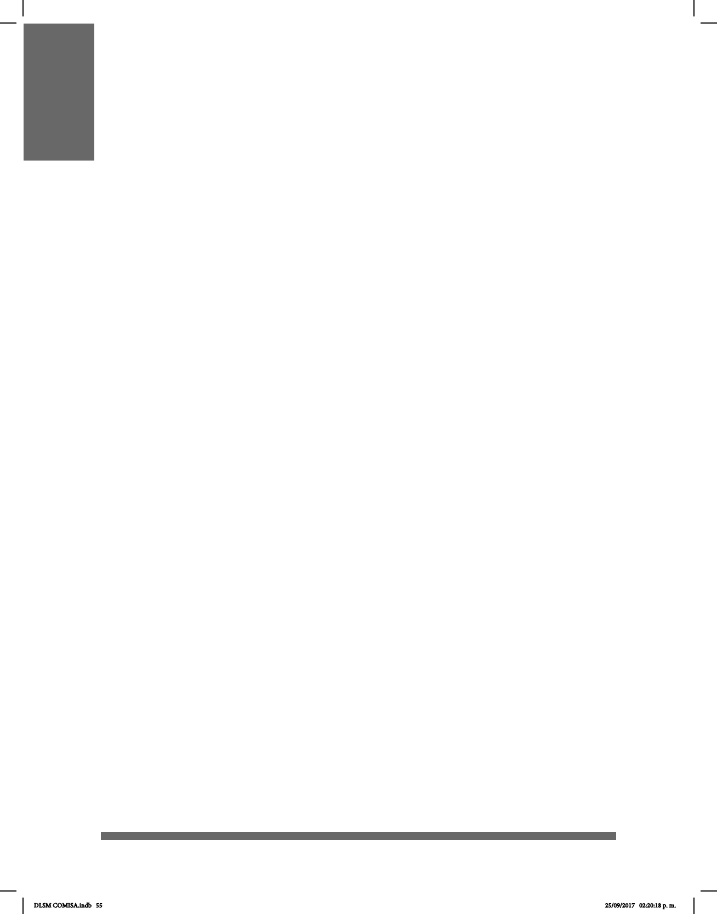

55
VARIACIÓN LINGÜÍSTICA DE LA LSM
La evolución de la Lengua de Señas Mexicana (LSM) ha sido complicada debido a los
escasos registros y a la falta de recolección de datos conables y exactos a causa de los
años en que estuvo prohibida.
Las lenguas naturales están en constante cambio. El cambio lingüístico natural que
sufre una lengua en el transcurso del tiempo es funcional, es decir, que las lenguas se
modican para adaptarse a las exigencias comunicativas de los usuarios.
Las diferentes comunidades de LSM han originado señas que resuelven las
necesidades de comunicación particulares, es por esto que hay señas que se realizan de formas
articulatoriamente distintas a la variante de la Ciudad de México.
En el mundo entero las comunidades sordas han vivido dicultades y restricciones en el
libre uso de las lenguas de señas: se seguían usando en círculos pequeños de amigos y,
en la mayoría de los hogares donde había una persona sorda, no eran consideradas para
el uso cotidiano, al menos como primera lengua.
Pese a las limitantes físicas, lingüísticas y socioculturales, las lenguas de señas han
ogrado prevalecer e inclusive han incorporado nuevo vocabulario no sólo a nivel
coloquial, sino hasta términos de nivel técnico y cientíco; con ello se demuestran
los cambios lingüísticos y socioculturales de los usuarios de esta lengua y de sus
necesidades prevalentes. Debido a la escasez de registros en relación con el
enriquecimiento y evolución de las lenguas de señas, resulta muy complicado hacer una
recolección de ellas de una manera conable y exacta.
Como ejemplo, en el caso de no encontrarse una seña en el entorno, se opta por
asumir en calidad de préstamo la seña empleada en alguna otra comunidad sorda; a este
fenómeno se le conoce como “préstamo lingüístico”(Cruz, 2008). Es así que, en el caso
de los nombres de algunos países, se ha recurrido a integrar al vocabulario las señas
empleadas por organismos internacionales de sordos. Cabe señalar que las señas son
propias de cada estado y, por tanto, están consideradas por las personas sordas de la
Ciudad de México para tomarlas en calidad de préstamo en caso de ser necesario.
Al igual que en las lenguas naturales orales, la variación lingüística de la LSM se
debe a ciertos factores sociales, culturales, de nivel de escolaridad, religión, ubicación
geográca, o a la intervención de grupos de oyentes que inventan las señas
cuando no conocen la LSM o cuando no existen señas especícas para las necesidades
comunicativas de un momento dado.
DLSM COMISA.indb 55 25/09/2017 02:20:18 p. m.